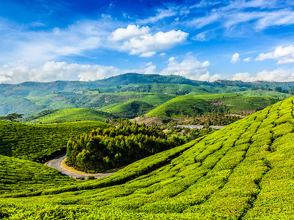

Ashikaga Flower Park: Ashikaga, Japan.
Ashikaga Flower Park is one of the best places to view fuji flowers.
Milford Sound, New Zealand
Milford Sound is the eighth wonder of the world. And if you pay a visit to this region, you will have all the reasons to believe this
Four Seasons, Bora Bora.
Bora Bora is on the bucket lists of many.Recently awarded the title of “the best island in the world’.

Plitvice Lakes National Park, Croatia.
When 16 crystalline lakes tumble into each other to form a series of cascading waterfalls, it’s a sight to behold. This national park and one of the most beautiful locations in the world

Santorini, Greece
Greece is a paradise for the honeymooners. Filled with gorgeous landscapes, buildings and lovely plazas, Greece is a country with several best places to visit in the world.

Munnar India.
Kerala in India is where Munnar is located. Surrounded by amazing and gorgeous Western Ghats, the tea gardens of Munnar make it one of the tourist places in world worth visiting.
Antelope Canyon, USA
A visit to Horseshoe Bend and Antelope Canyon is something that everyone should include in their list of best places to travel in the world.
Sheikh Zayed Grand Mosque, UAE
With more than 80 marble domes on the roof line sitting atop more than 1000 pillars, Sheikh Zayed Mosque in Abu Dhabi is an important part of Dubai tourism.
{kind=link}
{kind=link}
{kind=link}
{kind=link}
{kind=link}
{kind=link}